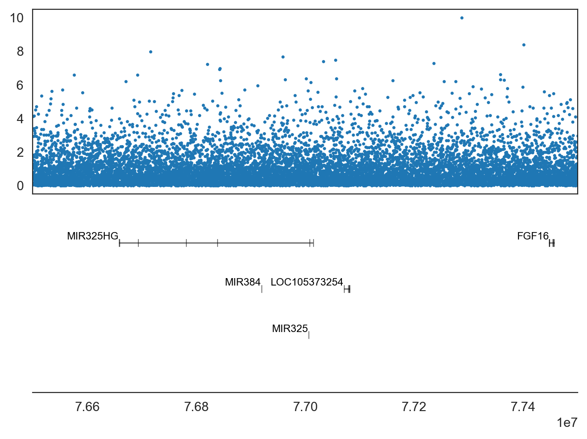
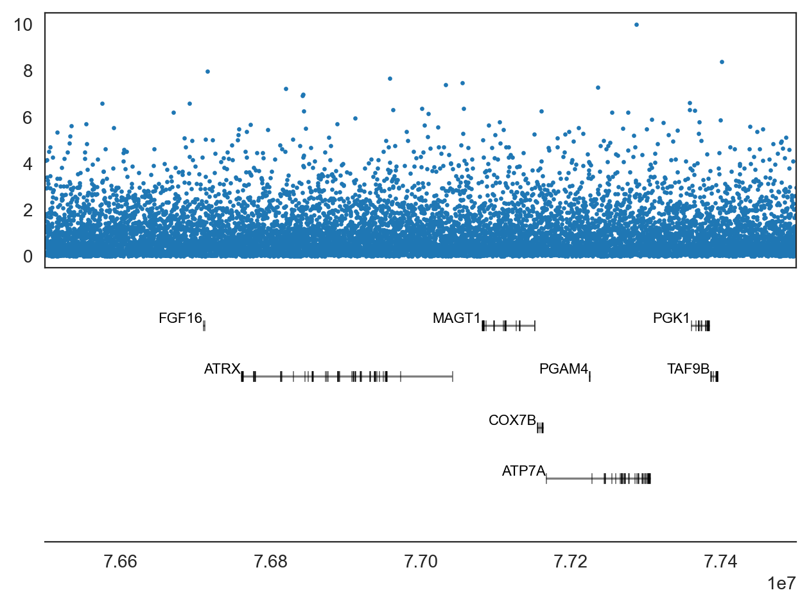
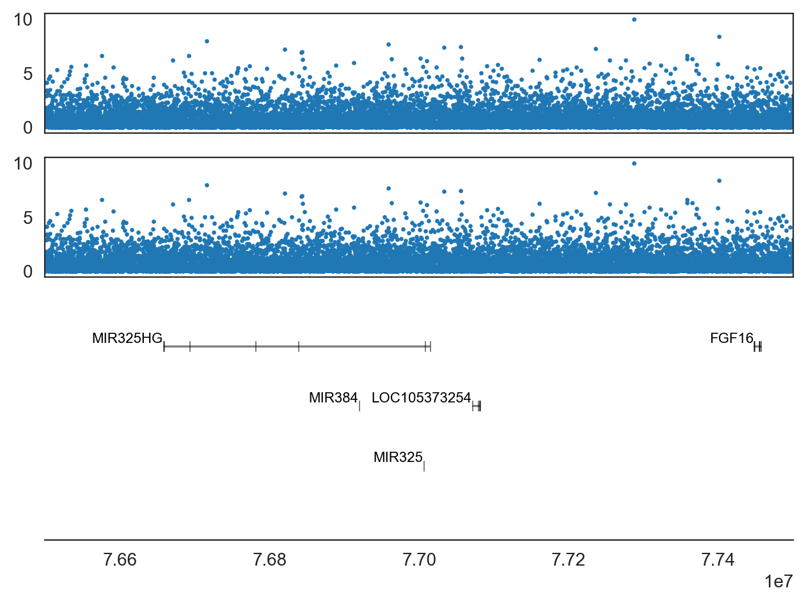
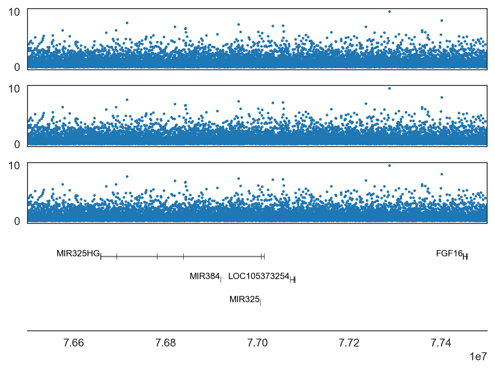
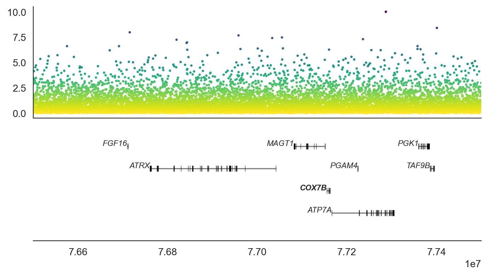
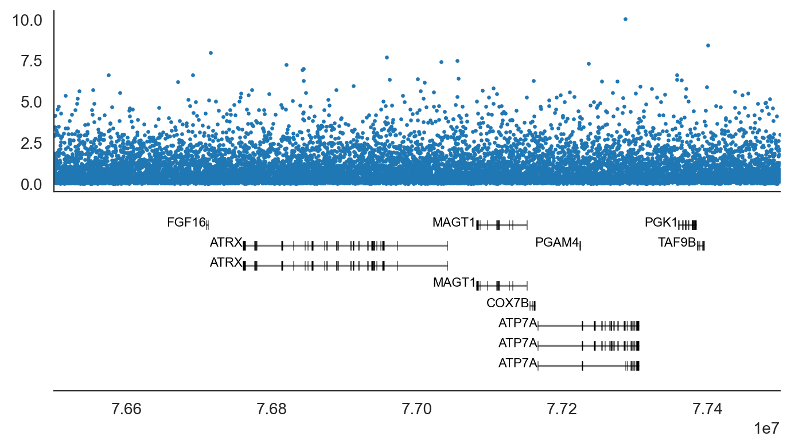
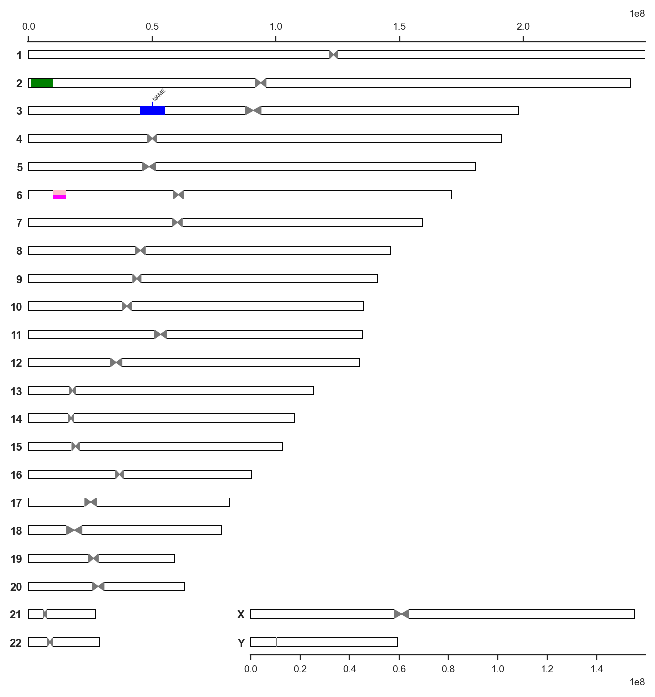

import sys, os
import re
from collections import defaultdict
import numpy as np
import pandas as pd
import pickle
%matplotlib inline
import matplotlib.pyplot as plt
from matplotlib_inline.backend_inline import set_matplotlib_formats
set_matplotlib_formats('retina', 'png')
from matplotlib.patches import Rectangle, Polygon
import seaborn as sns
sns.set_style('white')
import geneinfo as gi
gi.email('your@email.com')
#%run -i build_cache.pyExample use
In-house uliity for accessing gene lists in google spreadsheet:
from math import sqrt
from itertools import zip_longest
def list_genes(words, ncols=None):
n = len(words)
col_width = max(map(len, words)) + 1
if ncols is None:
ncols = max(100//col_width, 1+sqrt(n/col_width))
nrows = int(n/ncols) + 1
rows = []
for r in range(0, n, nrows):
rows.append(words[r:r+nrows])
for row in list(zip_longest(*rows, fillvalue='')):
line = []
for gene in row:
line.append(gene.ljust(col_width))
print(''.join(line))
def read_google_sheet():
SHEET_ID = '1JSjSLuto3jqdEnnG7JqzeC_1pUZw76n7XueVAYrUOpk'
SHEET_NAME = 'Sheet1'
url = f'https://docs.google.com/spreadsheets/d/{SHEET_ID}/gviz/tq?tqx=out:csv&sheet={SHEET_NAME}'
df = pd.read_csv(url, header=1, low_memory=False)
return df.loc[:, [not x.startswith('Unnamed') for x in df.columns]]
def gene_list_names():
df = read_google_sheet()
return sorted(df.columns.tolist())
def gene_list(name):
df = read_google_sheet()
sr = df[name]
return sr[~sr.isnull()]# from pkg_resources import resource_filename
# with open(resource_filename('geneinfo', 'data/gene_lists.pickle'), 'rb') as f:
# gene_lists = pickle.load(f)
# def gene_list_names():
# return sorted(gene_lists.keys())
# def gene_list(name):
# return gene_lists[name].tolist()gene_list_names() ['accel_reg_simiiformes_br',
'all_npx',
'all_post_mei_expr',
'ari_all',
'ari_nonPUR',
'ari_relate_AFR',
'ari_relate_ASIA',
'ari_relate_EUR',
'ari_relate_PUR',
'cDEG',
'candidates',
'ech75_regions',
'ech90_regions',
'expr_mod_xi_copynr_fibrobl',
'expr_mod_xi_copynr_lcl',
'gametologs',
'hpa_brain_prot',
'intel_seiz_lang',
'intelect_disabil',
'intersection(nDEG, matos_neuron)',
'matos_common',
'matos_common_no_xy_gametologs',
'matos_neuron',
'meritxell_spermatid_expr',
'msci',
'msci_esc',
'mult_copy',
'my_primate_codeml',
'nDEG',
'neuron_genome_proteome',
'neuron_npx_proteome',
'primate_ampl_multi',
'reg_sa_pheno',
'sfari_all_conf',
'union(H,matos_common)',
'xi',
'xi_any_evidence',
'xi_escape',
'xi_uncertain']xi_escape = gene_list('xi_escape')
list_genes(xi_escape)AFF2 CDK16 EFNB1 GPR173 IKBKG MAMLD1 OFD1 PPP2R3B SEPTIN6 TCEAL9 XG
AKAP17A CDR1 EIF1AX GPR174 IL3RA MAP7D2 P2RY10 PQBP1 SLC25A6 TCEANC XIST
ALG13 CHM EIF2S3 GTPBP6 IQSEC2 MED14 P2RY8 PRKX SMC1A TRAPPC2 XPNPEP2
AP1S2 COX7B FGF13 GYG2 JPX MSL3 PDZD11 PUDP SRPX TXLNG ZBED1
ARSD CXorf38 FHL1 HCFC1 KDM5C MXRA5 PHKA1 RAB9A STK26 UBA1 ZFX
ASMTL CXorf65 FOXO4 HEPH KDM6A NAA10 PLCXD1 RBBP7 STS UBQLN2 ZRSR2
CA5B DDX3X FUNDC1 HMGN5 LRCH2 NHS PNPLA4 RPS4X SYAP1 USP9X
CD99 DHRSX GEMIN8 HUWE1 MAGEE1 NHSL2 PORCN SCML2 TASL WAS Left align in pandas tables:
class left:
def __rlshift__(self, df):
"Left align columns of data frame: df << left()"
left_aligned_df = df.style.set_properties(**{'text-align': 'left'})
left_aligned_df = left_aligned_df.set_table_styles(
[dict(selector = 'th', props=[('text-align', 'left')])])
display(left_aligned_df)
df = pd.DataFrame(dict(name=['A', 'B'], desc=['bla bla bla bla', 'bla']))
df| name | desc | |
|---|---|---|
| 0 | A | bla bla bla bla |
| 1 | B | bla |
df << left()| name | desc | |
|---|---|---|
| 0 | A | bla bla bla bla |
| 1 | B | bla |
%%html
<style> table { font-variant-numeric: tabular-nums; } </style>Summary gene information
Using gene symbol:
gi.gene_info('USP4')Symbol: USP4 (protein-coding) Aliases: UNP, Unph
ubiquitin specific peptidase 4
Summary: The protein encoded by this gene is a protease that deubiquitinates target proteins such as ADORA2A and TRIM21. The encoded protein shuttles between the nucleus and cytoplasm and is involved in maintaining operational fidelity in the endoplasmic reticulum. Three transcript variants encoding different isoforms have been found for this gene. [provided by RefSeq, Oct 2011].
Genomic position: 3:49277144-49340712 (hg38), 3:49315264-49378145 (hg19)
Gene card
Using NCBI ID:
gi.gene_info(7157)Symbol: TP53 (protein-coding) Aliases: BCC7, BMFS5, LFS1, P53, TRP53
tumor protein p53
Summary: This gene encodes a tumor suppressor protein containing transcriptional activation, DNA binding, and oligomerization domains. The encoded protein responds to diverse cellular stresses to regulate expression of target genes, thereby inducing cell cycle arrest, apoptosis, senescence, DNA repair, or changes in metabolism. Mutations in this gene are associated with a variety of human cancers, including hereditary cancers such as Li-Fraumeni syndrome. Alternative splicing of this gene and the use of alternate promoters result in multiple transcript variants and isoforms. Additional isoforms have also been shown to result from the use of alternate translation initiation codons from identical transcript variants (PMIDs: 12032546, 20937277). [provided by RefSeq, Dec 2016].
Genomic position: 17:7661779-7687546 (hg38), 17:7565097-7590856 (hg19)
Gene card
For a a list of genes:
gi.gene_info(['LARS2', 'XCR1'])Symbol: LARS2 (protein-coding) Aliases: HLASA, LEURS, PRLTS4, mtLeuRS
leucyl-tRNA synthetase 2, mitochondrial
Summary: This gene encodes a class 1 aminoacyl-tRNA synthetase, mitochondrial leucyl-tRNA synthetase. Each of the twenty aminoacyl-tRNA synthetases catalyzes the aminoacylation of a specific tRNA or tRNA isoaccepting family with the cognate amino acid. [provided by RefSeq, Jul 2008].
Genomic position: 3:45388561-45554726 (hg38), 3:45429998-45590913 (hg19)
Gene card
Symbol: XCR1 (protein-coding) Aliases: CCXCR1, GPR5
X-C motif chemokine receptor 1
Summary: The protein encoded by this gene is a chemokine receptor belonging to the G protein-coupled receptor superfamily. The family members are characterized by the presence of 7 transmembrane domains. The encoded protein transduces a signal by increasing the intracellular calcium ion level. The viral macrophage inflammatory protein-II is an antagonist of this receptor and blocks signaling. Some studies have implicated a cluster of genes at 3p21.31, including this gene, as associated with COVID-19 risk. The encoded protein may also play a role in cell proliferation and migration in several types of cancer. [provided by RefSeq, Jan 2023].
Genomic position: 3:46016990-46085825 (hg38), 3:46058516-46069234 (hg19)
Gene card
For genes a region:
gi.gene_info_region('chrX', 76500000, 77000000, assembly='hg19')Symbol: FGF16 (protein-coding) Aliases: FGF-16, MF4
fibroblast growth factor 16
Summary: This gene encodes a member of a family of proteins that are involved in a variety of biological processes, including embryonic development, cell growth, morphogenesis, tissue repair, tumor growth and invasion. This gene is expressed in cardiac cells and is required for proper heart development. Mutation in this gene was also observed in individuals with metacarpal 4-5 fusion. [provided by RefSeq, Mar 2014].
Gene card
Symbol: ATRX (protein-coding) Aliases: JMS, MRX52, RAD54, RAD54L, XH2, XNP, ZNF-HX
ATRX chromatin remodeler
Summary: The protein encoded by this gene contains an ATPase/helicase domain, and thus it belongs to the SWI/SNF family of chromatin remodeling proteins. This protein is found to undergo cell cycle-dependent phosphorylation, which regulates its nuclear matrix and chromatin association, and suggests its involvement in the gene regulation at interphase and chromosomal segregation in mitosis. Mutations in this gene are associated with X-linked syndromes exhibiting cognitive disabilities as well as alpha-thalassemia (ATRX) syndrome. These mutations have been shown to cause diverse changes in the pattern of DNA methylation, which may provide a link between chromatin remodeling, DNA methylation, and gene expression in developmental processes. Multiple alternatively spliced transcript variants encoding distinct isoforms have been reported. [provided by RefSeq, Jul 2017].
Genomic position: X:77504880-77786233 (hg38), HG1426_PATCH:76765832-77047170, X:76760356-77041702 (hg19)
Gene card
Symbol: ATRX (protein-coding) Aliases: JMS, MRX52, RAD54, RAD54L, XH2, XNP, ZNF-HX
ATRX chromatin remodeler
Summary: The protein encoded by this gene contains an ATPase/helicase domain, and thus it belongs to the SWI/SNF family of chromatin remodeling proteins. This protein is found to undergo cell cycle-dependent phosphorylation, which regulates its nuclear matrix and chromatin association, and suggests its involvement in the gene regulation at interphase and chromosomal segregation in mitosis. Mutations in this gene are associated with X-linked syndromes exhibiting cognitive disabilities as well as alpha-thalassemia (ATRX) syndrome. These mutations have been shown to cause diverse changes in the pattern of DNA methylation, which may provide a link between chromatin remodeling, DNA methylation, and gene expression in developmental processes. Multiple alternatively spliced transcript variants encoding distinct isoforms have been reported. [provided by RefSeq, Jul 2017].
Genomic position: X:77504880-77786233 (hg38), HG1426_PATCH:76765832-77047170, X:76760356-77041702 (hg19)
Gene card
For species other than human:
gi.gene_info('DYNLT3', species='mouse', scopes=['mgi'])Symbol: Dynlt3 (protein-coding) Aliases: 2310075M16Rik, Tcte1l
dynein light chain Tctex-type 3
Gene card
Get the HGCN symbol for an alias
gi.hgcn_symbol(['CXorf23', 'BCLAF3'])['BCLAF3', 'BCLAF3']Get coordinates for genes in a region
gi.get_genes_region('chrX', 76500000, 77000000, assembly='hg19')[('FGF16',
76709642,
76712769,
'+',
[(76709642, 76709751), (76711767, 76712769)]),
('ATRX',
76760357,
77041702,
'-',
[(76760357, 76764107),
(76776265, 76776394),
(76776880, 76776976),
(76777740, 76777866),
(76778729, 76778879),
(76812921, 76813116),
(76814139, 76814317),
(76829714, 76829823),
(76845303, 76845410),
(76849165, 76849319),
(76854879, 76855049),
(76855200, 76855289),
(76855902, 76856033),
(76872080, 76872198),
(76874273, 76874449),
(76875862, 76876000),
(76888694, 76888872),
(76889053, 76889200),
(76890084, 76890194),
(76891405, 76891547),
(76907603, 76907843),
(76909587, 76909690),
(76912049, 76912143),
(76918870, 76919047),
(76920133, 76920267),
(76931720, 76931793),
(76937011, 76940085),
(76940430, 76940498),
(76944310, 76944420),
(76949312, 76949426),
(76952064, 76952192),
(76953070, 76953123),
(76954061, 76954117),
(76972607, 76972720),
(77041467, 77041702)]),
('ATRX',
76760357,
77041702,
'-',
[(76760357, 76764107),
(76776265, 76776394),
(76776880, 76776976),
(76777740, 76777866),
(76778729, 76778879),
(76812921, 76813116),
(76814139, 76814317),
(76829714, 76829823),
(76845303, 76845410),
(76849165, 76849319),
(76854879, 76855049),
(76855200, 76855289),
(76855902, 76856033),
(76872080, 76872198),
(76874273, 76874449),
(76875862, 76876000),
(76888694, 76888872),
(76889053, 76889200),
(76890084, 76890194),
(76891405, 76891547),
(76907603, 76907843),
(76909587, 76909690),
(76912049, 76912143),
(76918870, 76919047),
(76920133, 76920267),
(76931720, 76931793),
(76937011, 76940085),
(76940430, 76940498),
(76944310, 76944420),
(76952064, 76952192),
(76953070, 76953123),
(76954061, 76954117),
(76972607, 76972720),
(77041467, 77041702)])]Plot data over gene annotation
# x = np.linspace(1, 1520300000, 100000)
# y = np.random.random(100000)
# dummy manhattan data
x = np.linspace(76500000, 77500000, 10000)
rng = np.random.default_rng()
y = rng.exponential(scale=1, size=x.size)Standard plot:
ax = gi.gene_plot('chrX', 76500000, 77500000, 'hg38')
ax.scatter(x, y, s=2)
plt.tight_layout()
Same on older hg19 assembly:
ax = gi.gene_plot('chrX', 76500000, 77500000, assembly='hg19')
ax.scatter(x, y, s=2)
plt.tight_layout()
Two subplots for data:
ax1, ax2 = gi.gene_plot('chrX', 76500000, 77500000, assembly='hg38', return_axes=2)
ax1.scatter(x, y, s=2)
ax2.scatter(x, y, s=2)
plt.tight_layout()
Three subplots for data and adjusted aspect ratio:
ax1, ax2, ax3 = gi.gene_plot('chrX', 76500000, 77500000, assembly='hg38', return_axes=3, aspect=0.5)
ax1.scatter(x, y, s=2)
ax2.scatter(x, y, s=2)
ax3.scatter(x, y, s=2)
plt.tight_layout()
Highlight a list of genes:
ax = gi.gene_plot('chrX', 76500000, 77500000, 'hg19', highlight=['ATRX', 'ATP7A'])
ax.scatter(x, y, s=2)
sns.despine(ax=ax) # make it look nicer
plt.tight_layout()Combinatorial hightlighting:
Combining text weight, style, color and bbox:
highlight = defaultdict(dict)
for gene in ['ATRX', 'COX7B', 'PGK1']:
highlight[gene].update(dict(weight='bold'))
for gene in ['MAGT1']:
highlight[gene].update(dict(style='italic'))
for gene in ['ATP7A', 'ATRX']:
highlight[gene].update(dict(color='red'))
for gene in ['PGK1', 'ATRX']:
highlight[gene].update(dict(bbox=dict(edgecolor='black', facecolor='none', linewidth=0.2)))ax = gi.gene_plot('chrX', 76500000, 77500000, 'hg19', highlight=highlight)
ax.scatter(x, y, s=2)
sns.despine(ax=ax) # make it look nicer
plt.tight_layout()highlight = defaultdict(dict)
for gene in gene_list('xi_any_evidence'):
highlight[gene].update(dict(weight='bold'))
for gene in gene_list('ech75_regions'):
highlight[gene].update(dict(style='italic'))
for gene in gene_list('sfari_all_conf') + gene_list('intelect_disabil'):
highlight[gene].update(dict(color='red'))
for gene in gene_list('gametologs') + gene_list('mult_copy') + gene_list('xi_escape') + gene_list('cDEG') + gene_list('nDEG'):
highlight[gene].update(dict(bbox=dict(edgecolor='black', facecolor='none', linewidth=0.2)))ax = gi.gene_plot('chrX', 76500000, 77500000, 'hg19', highlight=highlight)
ax.scatter(x, y, s=2)
sns.despine(ax=ax) # make it look nicer
plt.tight_layout()Larger with colors:
ax = gi.gene_plot('chrX', 76500000, 77500000, 'hg19', highlight=highlight, figsize=(10, 4))
ax.scatter(x, y, s=2, c=y, cmap='viridis_r')
sns.despine(ax=ax) # make it look nicer
plt.tight_layout()
Other features:
ax = gi.gene_plot('chrX', 76500000, 77500000, assembly='hg19',
figsize=(10, 4), # larger figure
collapse_splice_var=False, # show all splice variants separately
exact_exons=False, # allow exons to be wide enough to be visible on large plots
hard_limits=True, # truncate genes that overlap the borders of the specified range
)
ax.scatter(x, y, s=2)
sns.despine(ax=ax) # make it look nicer
plt.tight_layout()
Show STRING interaction network
gi.show_string_network(['ATRX', 'TP53', 'RAD51'], nodes=10)Chromosome ideogram
# import importlib
# import geneinfo
# importlib.reload(geneinfo)annotation = [
('chr1', 50000000, 50001000), # segment color defaults to red
('chr2', 10000000, 1000000, 'green'), # with segment color
('chr3', 45000000, 55000000, 'blue', 'NAME'), # with name label
('chr6', 10000000, 15000000, 'magenta', None, 0, 0.5), # with base and height
('chr6', 10000000, 15000000, 'pink', None, 0.5, 0.5), # with base and height
]
gi.chrom_ideogram(annotation)To make sure segments are visible on the plot, the default minimal size of plotteed segments are 200000. This can be changed like this (notice how the chr1 segment is no longer visible):
gi.chrom_ideogram(annotation, min_visible_width=1)Other assembly, figure dimentions:
gi.chrom_ideogram(annotation, assembly='hg19', figsize=(4, 8))
You can add position markers along a chromosome like this to better see the location of some segments:
chrom = 'chr3'
start = 100000000
end = 200000000
width = 10000000
annotation2 = annotation + [(chrom, x[0], x[1], 'black', str(x[2]/width)) for x in zip(
range(start, end, width),
range(start+1, end, width),
range(start, end, width)
)]
gi.chrom_ideogram(annotation2)
Gene ontology information
NB: The first time you use the GO utilities, it will spend a very long time downloading data. If you do not want to wait that out in the notebook, you can execute this command in the folder where you store your notebooks:
conda run -n <environment> python -c 'import geneinfo ; geneinfo.download_data()'Get info for one or more GO terms:
gi.go_info('GO:0000776')GO:0000776: kinetochore
A multisubunit complex that is located at the centromeric region of DNA and provides an attachment point for the spindle microtubules.
gi.go_info(['GO:0000776', 'GO:0005634'])GO:0000776: kinetochore
A multisubunit complex that is located at the centromeric region of DNA and provides an attachment point for the spindle microtubules.
GO:0005634: nucleus
A membrane-bounded organelle of eukaryotic cells in which chromosomes are housed and replicated. In most cells, the nucleus contains all of the cell’s chromosomes except the organellar chromosomes, and is the site of RNA synthesis and processing. In some species, or in specialized cell types, RNA metabolism or DNA replication may be absent.
Get GO terms for a one or more genes:
go_terms = gi.get_go_terms_for_genes(['DYNLT3'])
go_terms[:10]['GO:0000776',
'GO:0005515',
'GO:0005634',
'GO:0005737',
'GO:0005868',
'GO:0007018',
'GO:0007346',
'GO:0042802',
'GO:0045505',
'GO:0045931']Descriptions for GO terms for one or more genes:
gi.go_info(gi.get_go_terms_for_genes(['DYNLT3']))GO:0000776: kinetochore
A multisubunit complex that is located at the centromeric region of DNA and provides an attachment point for the spindle microtubules.
GO:0005515: protein binding
Binding to a protein.
GO:0005634: nucleus
A membrane-bounded organelle of eukaryotic cells in which chromosomes are housed and replicated. In most cells, the nucleus contains all of the cell’s chromosomes except the organellar chromosomes, and is the site of RNA synthesis and processing. In some species, or in specialized cell types, RNA metabolism or DNA replication may be absent.
GO:0005737: cytoplasm
The contents of a cell excluding the plasma membrane and nucleus, but including other subcellular structures.
GO:0005868: cytoplasmic dynein complex
Any dynein complex with a homodimeric dynein heavy chain core that catalyzes movement along a microtubule. Cytoplasmic dynein complexes participate in many cytoplasmic transport activities in eukaryotes, such as mRNA localization, intermediate filament transport, nuclear envelope breakdown, apoptosis, transport of centrosomal proteins, mitotic spindle assembly, virus transport, kinetochore functions, and movement of signaling and spindle checkpoint proteins. Some complexes participate in intraflagellar transport. Subunits associated with the dynein heavy chain mediate association between dynein heavy chain and cargoes, and may include light chains and light intermediate chains.
GO:0007018: microtubule-based movement
A microtubule-based process that results in the movement of organelles, other microtubules, or other cellular components. Examples include motor-driven movement along microtubules and movement driven by polymerization or depolymerization of microtubules.
GO:0007346: regulation of mitotic cell cycle
Any process that modulates the rate or extent of progress through the mitotic cell cycle.
GO:0042802: identical protein binding
Binding to an identical protein or proteins.
GO:0045505: dynein intermediate chain binding
Binding to an intermediate chain of the dynein complex.
GO:0045931: positive regulation of mitotic cell cycle
Any process that activates or increases the rate or extent of progression through the mitotic cell cycle.
GO:0051301: cell division
The process resulting in division and partitioning of components of a cell to form more cells; may or may not be accompanied by the physical separation of a cell into distinct, individually membrane-bounded daughter cells.
GO:0061673: mitotic spindle astral microtubule
Any of the mitotic spindle microtubules that radiate in all directions from the spindle poles and are thought to contribute to the forces that separate the poles and position them in relation to the rest of the cell.
GO graphs
Show the sub-graph for a list of GO terms:
import geneinfo
import importlib
importlib.reload(geneinfo)
#geneinfo.go_info('GO:0000776')
geneinfo.show_go_dag_for_terms(go_terms)gi.show_go_dag_for_terms(go_terms)Show the sub-graph for the GO terms of a single gene:
gi.show_go_dag_for_gene('DYNLT3')Same but using GO annotation backed by certain kinds of evidence:
gi.show_go_dag_for_gene('DYNLT3', evidence=['IDA', 'EXP', 'HTP'])Show the categories of evidence backing GO annotations:
gi.show_go_evidence_codes()Experimental evidence codes:
Inferred from Experiment (EXP)
Inferred from Direct Assay (IDA)
Inferred from Physical Interaction (IPI)
Inferred from Mutant Phenotype (IMP)
Inferred from Genetic Interaction (IGI)
Inferred from Expression Pattern (IEP)
Inferred from High Throughput Experiment (HTP)
Inferred from High Throughput Direct Assay (HDA)
Inferred from High Throughput Mutant Phenotype (HMP)
Inferred from High Throughput Genetic Interaction (HGI)
Inferred from High Throughput Expression Pattern (HEP)
Phylogenetically-inferred annotations:
Inferred from Biological aspect of Ancestor (IBA)
Inferred from Biological aspect of Descendant (IBD)
Inferred from Key Residues (IKR)
Inferred from Rapid Divergence (IRD)
Computational analysis evidence codes
Inferred from Sequence or structural Similarity (ISS)
Inferred from Sequence Orthology (ISO)
Inferred from Sequence Alignment (ISA)
Inferred from Sequence Model (ISM)
Inferred from Genomic Context (IGC)
Inferred from Reviewed Computational Analysis (RCA)
Author statement evidence codes:
Traceable Author Statement (TAS)
Non-traceable Author Statement (NAS)
Curator statement evidence codes:
Inferred by Curator (IC)
No biological Data available (ND)
Electronic annotation evidence code:
Inferred from Electronic Annotation (IEA)
Find genes based on GO info
Find genes matching a regular expression in any associated GO term description:
motor_genes_df = gi.get_genes_for_go_regex('kinesin|dynein')
motor_genes_df.head() << left()geneinfo_cache/go-basic.obo: fmt(1.2) rel(2024-09-08) 44,296 Terms; optional_attrs(comment def relationship synonym xref)
geneinfo_cache/go-basic.obo: fmt(1.2) rel(2024-09-08) 44,296 Terms; optional_attrs(comment def relationship synonym xref)| symbol | name | chrom | start | end | |
|---|---|---|---|---|---|
| 0 | SPAG1 | sperm associated antigen 1 | 8 | 100158037 | 100241903 |
| 1 | BLOC1S2 | biogenesis of lysosomal organelles complex 1 subunit 2 | 10 | 100286679 | 100273277 |
| 2 | LZTS2 | leucine zipper tumor suppressor 2 | 10 | 100996587 | 101007832 |
| 3 | DYNC1H1 | dynein cytoplasmic 1 heavy chain 1 | 14 | 101964572 | 102056442 |
| 4 | KIF1B | kinesin family member 1B | 1 | 10210569 | 10381602 |
Global GO enrichment
Enrichment against all GO terms with all protein coding genes as background:
import importlib
import geneinfo
importlib.reload(geneinfo)<module 'geneinfo' from '/Users/kmt/geneinfo/geneinfo/__init__.py'>go_results = gi.go_enrichment(motor_genes_df.symbol)
go_results.head(10)Could not map gene symbol "KIF28P" to ncbi id| namespace | term_id | e/p | pval_uncorr | p_fdr_bh | ratio | bg_ratio | obj | |
|---|---|---|---|---|---|---|---|---|
| 0 | CC | GO:0005874 | e | 3.174662e-104 | 5.793757e-101 | 0.296407 | 0.014664 | <GO:0005874> |
| 1 | BP | GO:0007018 | e | 3.469444e-87 | 4.220231e-83 | 0.152695 | 0.002719 | <GO:0007018> |
| 2 | CC | GO:0005871 | e | 1.323152e-82 | 1.207376e-79 | 0.134731 | 0.002185 | <GO:0005871> |
| 3 | MF | GO:0008017 | e | 2.849730e-80 | 1.305176e-76 | 0.239521 | 0.012819 | <GO:0008017> |
| 4 | CC | GO:0005813 | e | 1.960675e-77 | 1.192744e-74 | 0.314371 | 0.030444 | <GO:0005813> |
| 5 | MF | GO:0019894 | e | 4.661206e-77 | 1.067416e-73 | 0.125749 | 0.002039 | <GO:0019894> |
| 6 | CC | GO:0032391 | e | 3.269844e-75 | 1.491866e-72 | 0.122754 | 0.001991 | <GO:0032391> |
| 7 | MF | GO:0003777 | e | 5.259928e-70 | 8.030157e-67 | 0.125749 | 0.002331 | <GO:0003777> |
| 8 | MF | GO:0045505 | e | 7.657838e-68 | 8.768225e-65 | 0.110778 | 0.001797 | <GO:0045505> |
| 9 | CC | GO:0016235 | e | 3.632820e-64 | 1.325979e-61 | 0.104790 | 0.001699 | <GO:0016235> |
Show GO DAG for enrichment results:
gi.show_go_dag_enrichment_results(go_results.obj)Same but only for top 10 GO terms:
gi.show_go_dag_enrichment_results(go_results.obj[:10])Descriptions of the same 10 GO terms:
gi.go_info(go_results.term_id[:10])GO:0005874: microtubule
Any of the long, generally straight, hollow tubes of internal diameter 12-15 nm and external diameter 24 nm found in a wide variety of eukaryotic cells; each consists (usually) of 13 protofilaments of polymeric tubulin, staggered in such a manner that the tubulin monomers are arranged in a helical pattern on the microtubular surface, and with the alpha/beta axes of the tubulin subunits parallel to the long axis of the tubule; exist in equilibrium with pool of tubulin monomers and can be rapidly assembled or disassembled in response to physiological stimuli; concerned with force generation, e.g. in the spindle.
GO:0007018: microtubule-based movement
A microtubule-based process that results in the movement of organelles, other microtubules, or other cellular components. Examples include motor-driven movement along microtubules and movement driven by polymerization or depolymerization of microtubules.
GO:0005871: kinesin complex
Any complex that includes a dimer of molecules from the kinesin superfamily, a group of related proteins that contain an extended region of predicted alpha-helical coiled coil in the main chain that likely produces dimerization. The native complexes of several kinesin family members have also been shown to contain additional peptides, often designated light chains as all of the noncatalytic subunits that are currently known are smaller than the chain that contains the motor unit. Kinesin complexes generally possess a force-generating enzymatic activity, or motor, which converts the free energy of the gamma phosphate bond of ATP into mechanical work.
GO:0008017: microtubule binding
Binding to a microtubule, a filament composed of tubulin monomers.
GO:0005813: centrosome
A structure comprised of a core structure (in most organisms, a pair of centrioles) and peripheral material from which a microtubule-based structure, such as a spindle apparatus, is organized. Centrosomes occur close to the nucleus during interphase in many eukaryotic cells, though in animal cells it changes continually during the cell-division cycle.
GO:0019894: kinesin binding
Interacting selectively and non-covalently and stoichiometrically with kinesin, a member of a superfamily of microtubule-based motor proteins that perform force-generating tasks such as organelle transport and chromosome segregation.
GO:0032391: photoreceptor connecting cilium
The portion of the photoreceptor cell cilium linking the photoreceptor inner and outer segments. It’s considered to be equivalent to the ciliary transition zone.
GO:0003777: microtubule motor activity
A motor activity that generates movement along a microtubule, driven by ATP hydrolysis.
GO:0045505: dynein intermediate chain binding
Binding to an intermediate chain of the dynein complex.
GO:0016235: aggresome
An inclusion body formed by dynein-dependent retrograde transport of an aggregated protein on microtubules.
Show the GO DAG for a set of GO terms and their parent terms:
gi.show_go_dag_for_terms(go_results.term_id[:10])Specifying a custom set of background genes:
The query genes should be a subset of the background genes:
all_protein_coding = set(pd.read_csv('geneinfo_cache/9606_protein_genes.txt', sep='\t').Symbol)
# only the first 50 genes:
subset_background = list(all_protein_coding)[:50] + motor_genes_df.symbol.tolist()go_results = gi.go_enrichment(motor_genes_df.symbol, background_genes=subset_background)
go_resultsCould not map gene symbol "KIF28P" to ncbi id
Could not map gene symbol "KIF28P" to ncbi id| namespace | term_id | e/p | pval_uncorr | p_fdr_bh | ratio | bg_ratio | obj | |
|---|---|---|---|---|---|---|---|---|
| 0 | CC | GO:0005813 | e | 8.279747e-07 | 0.000378 | 0.314371 | 0.276042 | <GO:0005813> |
| 1 | CC | GO:0005874 | e | 2.975553e-06 | 0.000678 | 0.296407 | 0.260417 | <GO:0005874> |
| 2 | CC | GO:0005737 | e | 2.878076e-05 | 0.004375 | 0.538922 | 0.497396 | <GO:0005737> |
| 3 | MF | GO:0000981 | p | 9.358545e-05 | 0.018951 | 0.011976 | 0.028646 | <GO:0000981> |
| 4 | MF | GO:0008017 | e | 6.502644e-05 | 0.018951 | 0.239521 | 0.210938 | <GO:0008017> |
| 5 | CC | GO:0005929 | e | 3.614207e-04 | 0.032962 | 0.164671 | 0.143229 | <GO:0005929> |
| 6 | CC | GO:0036064 | e | 3.598807e-04 | 0.032962 | 0.167665 | 0.145833 | <GO:0036064> |
| 7 | CC | GO:0005930 | e | 6.152330e-04 | 0.046758 | 0.155689 | 0.135417 | <GO:0005930> |
| 8 | CC | GO:0005829 | e | 7.499627e-04 | 0.048855 | 0.494012 | 0.460938 | <GO:0005829> |
Use only the X chromosome as background:
go_results = gi.go_enrichment(motor_genes_df.symbol, background_chrom='X')
go_resultsCould not map gene symbol "KIF28P" to ncbi id| namespace | term_id | e/p | pval_uncorr | p_fdr_bh | ratio | bg_ratio | obj | |
|---|---|---|---|---|---|---|---|---|
| 0 | MF | GO:0045505 | e | 0.000041 | 0.010017 | 0.333333 | 0.002345 | <GO:0045505> |
| 1 | MF | GO:0070840 | e | 0.000041 | 0.010017 | 0.333333 | 0.002345 | <GO:0070840> |
| 2 | MF | GO:0008017 | e | 0.000031 | 0.010017 | 0.500000 | 0.012896 | <GO:0008017> |
| 3 | CC | GO:0016235 | e | 0.000041 | 0.020475 | 0.333333 | 0.002345 | <GO:0016235> |
Enrichment among a subset of GO terms
Extract terms matching regular expression:
#target_terms = gi.get_terms_for_go_regex('brain')
#target_terms = gi.get_terms_for_go_regex('microtubul')
# target_terms = gi.get_terms_for_go_regex('spindle')
target_terms = gi.get_terms_for_go_regex(r'neuron\S* migration')
gi.show_go_dag_for_terms(target_terms)geneinfo_cache/go-basic.obo: fmt(1.2) rel(2024-09-08) 44,296 Terms; optional_attrs(comment def relationship synonym xref)go_results = gi.go_enrichment(motor_genes_df.symbol, terms=target_terms, list_study_genes=True)
go_results.head()geneinfo_cache/go-basic.obo: fmt(1.2) rel(2024-09-08) 44,296 Terms; optional_attrs(def relationship)Could not map gene symbol "KIF28P" to ncbi id| namespace | term_id | e/p | pval_uncorr | p_fdr_bh | ratio | bg_ratio | obj | study_genes | |
|---|---|---|---|---|---|---|---|---|---|
| 0 | CC | GO:0005615 | p | 0.000016 | 0.000063 | 0.020958 | 0.076426 | <GO:0005615> | [ACTB, BLOC1S1, HSPA1A, SNCA, LRP8, DYNC2I1, T... |
| 1 | CC | GO:0032991 | e | 0.000155 | 0.000310 | 0.071856 | 0.031027 | <GO:0032991> | [ACTB, HTT, HNRNPU, HSPA1A, HSPA1B, HSP90AB1, ... |
| 2 | BP | GO:0140650 | e | 0.000778 | 0.031519 | 0.005988 | 0.000146 | <GO:0140650> | [PAFAH1B1, NDEL1] |
| 3 | BP | GO:0001764 | e | 0.000515 | 0.031519 | 0.023952 | 0.005487 | <GO:0001764> | [BBS4, PAFAH1B1, PCM1, PSEN1, DISC1, DCDC2, ND... |
gi.show_go_dag_enrichment_results(go_results.obj)Extract terms matching two regular expressions in any order:
pattern_one = r'microtub\S*'
pattern_two = r'spindle'
regex = fr"(?=.*({pattern_one}))(?=.*({pattern_two}))(?=.*)"
target_terms = gi.get_terms_for_go_regex(regex)
gi.show_go_dag_for_terms(target_terms)geneinfo_cache/go-basic.obo: fmt(1.2) rel(2024-09-08) 44,296 Terms; optional_attrs(comment def relationship synonym xref)go_results = gi.go_enrichment(motor_genes_df.symbol, terms=target_terms, list_study_genes=True)
go_results.head()geneinfo_cache/go-basic.obo: fmt(1.2) rel(2024-09-08) 44,296 Terms; optional_attrs(def relationship)Could not map gene symbol "KIF28P" to ncbi id| namespace | term_id | e/p | pval_uncorr | p_fdr_bh | ratio | bg_ratio | obj | study_genes | |
|---|---|---|---|---|---|---|---|---|---|
| 0 | CC | GO:0005874 | e | 3.174662e-104 | 1.428598e-102 | 0.296407 | 0.014664 | <GO:0005874> | [APC, KIF1A, CENPE, DCTN1, DNAH5, DNAH6, DNAH8... |
| 1 | BP | GO:0007018 | e | 3.469444e-87 | 3.816388e-85 | 0.152695 | 0.002719 | <GO:0007018> | [CENPE, DYNC1I2, DYNC1LI2, KIF2A, KIF3C, KIF5A... |
| 2 | CC | GO:0005813 | e | 1.960675e-77 | 4.411518e-76 | 0.314371 | 0.030444 | <GO:0005813> | [APC, ARL3, BBS4, BICD1, CENPF, CETN1, CETN2, ... |
| 3 | CC | GO:0005868 | e | 3.150407e-42 | 4.725610e-41 | 0.068862 | 0.001117 | <GO:0005868> | [DYNC1H1, DYNC1I1, DYNC1I2, DYNC1LI2, DYNLT3, ... |
| 4 | CC | GO:0030286 | e | 5.844463e-35 | 6.575021e-34 | 0.056886 | 0.000923 | <GO:0030286> | [DCTN1, DNAH6, DNAH9, DYNC1H1, DYNC1I2, DYNC1L... |
gi.show_go_dag_enrichment_results(go_results.obj)